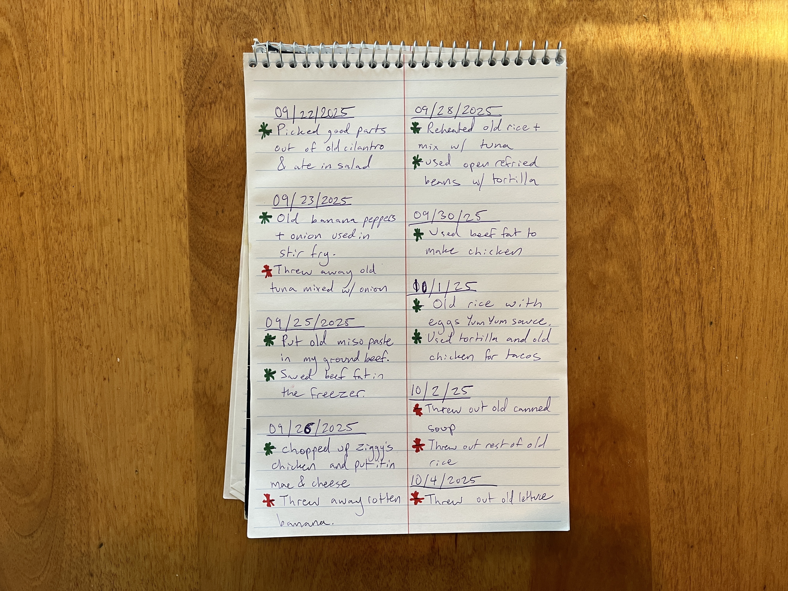
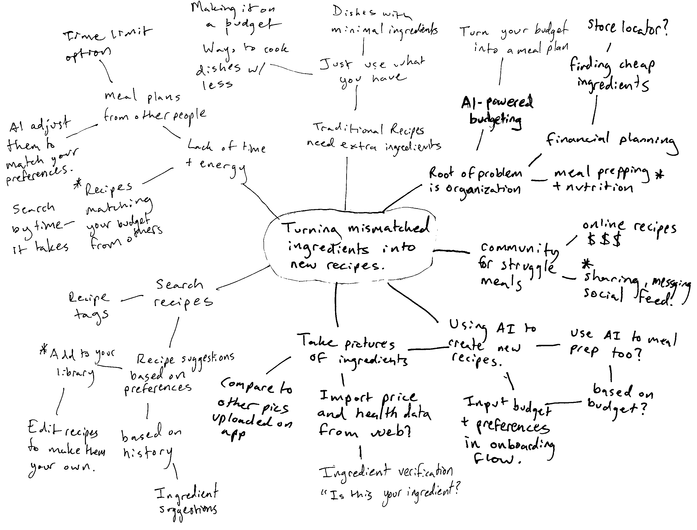
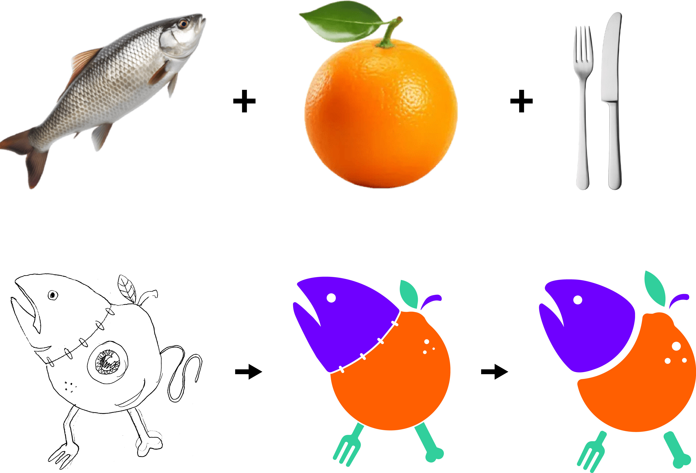
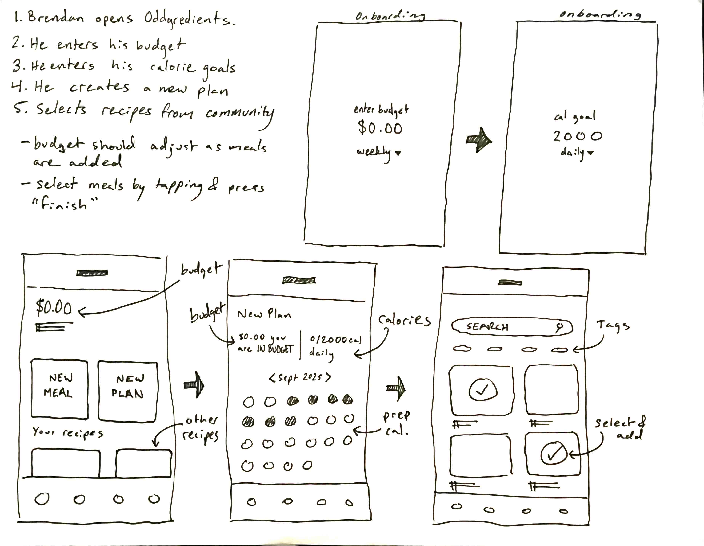
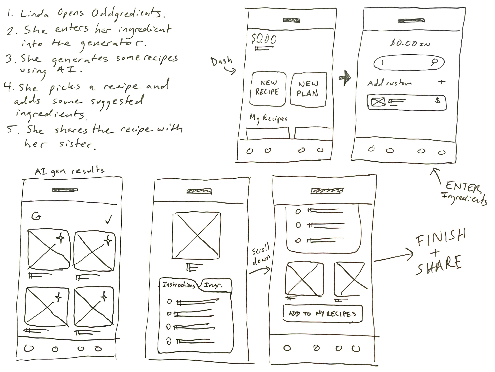
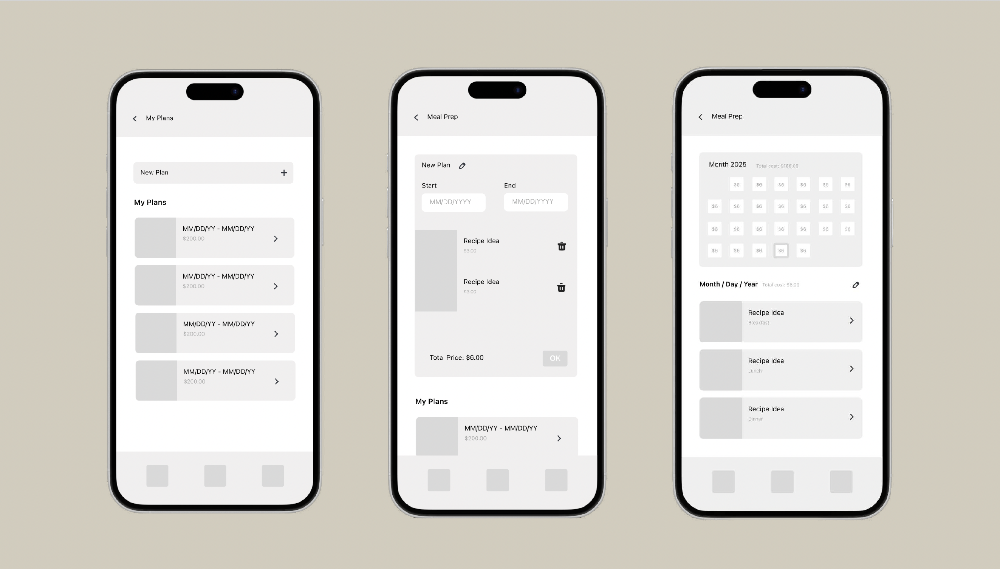
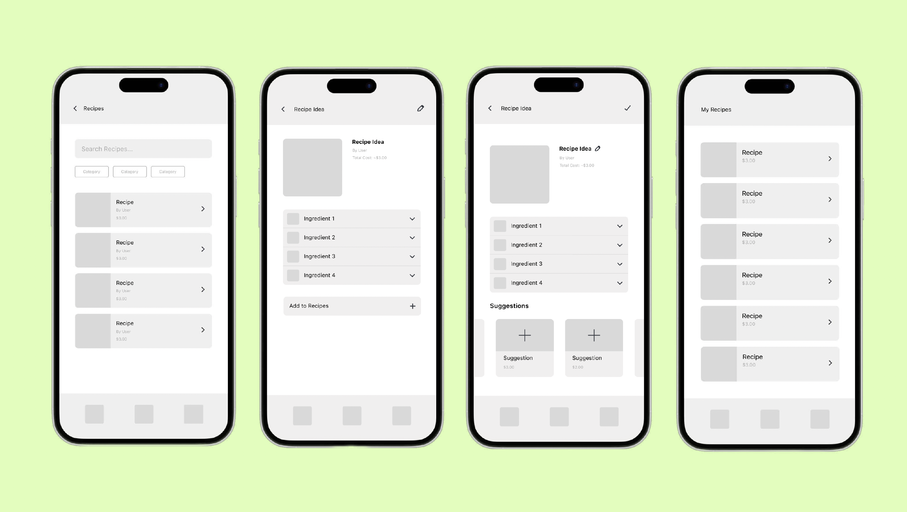
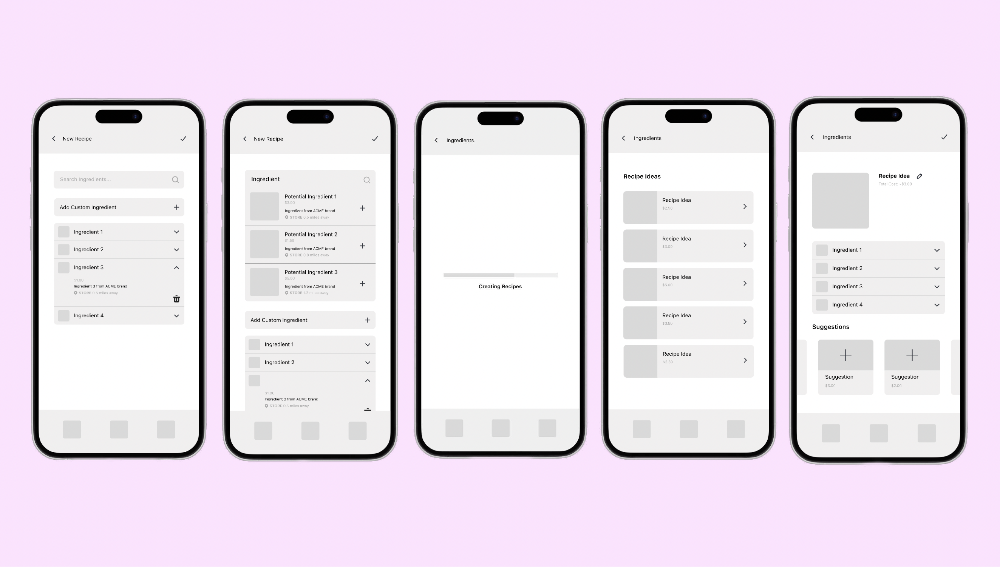
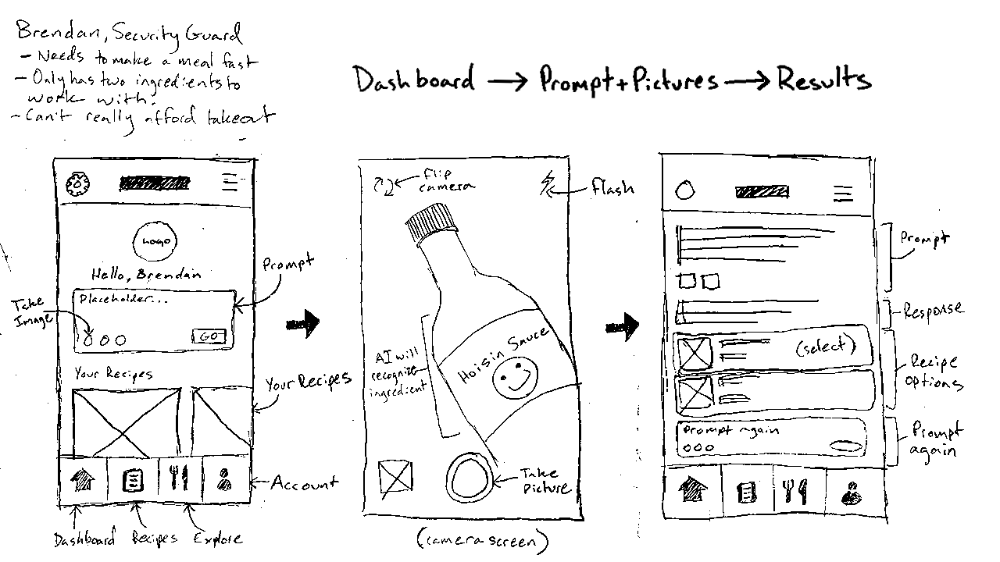
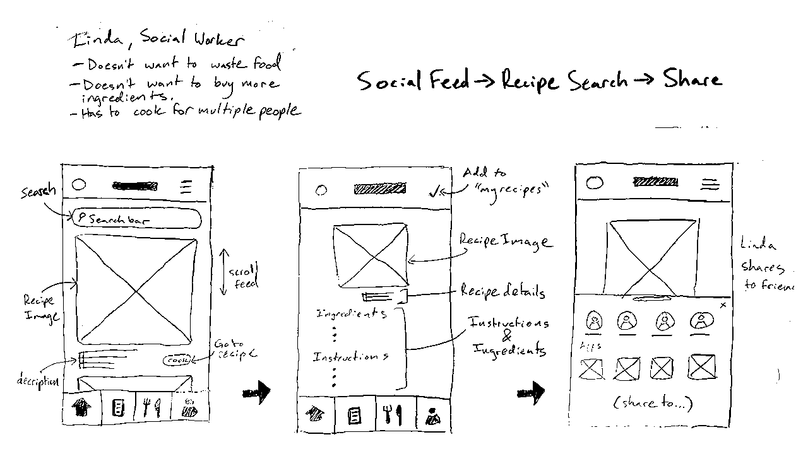

During school, I was on the go 7 days a week. Between classes, work and homework, I didn’t have much time or energy to do anything else. I strayed from my normal meal prepping routine and as a result, my nutrition and finances suffered.
Going to the grocery store was something I did in a rush and without a plan. I would pick an online recipe, buy the ingredients for it and eat it for the next 1-2 days. Many of these ingredients were things that I wouldn’t cook with on a regular basis. For example, if a recipe required 1 tablespoon of hoisin sauce, I would buy a whole bottle for around $5.
As a result of my disorganized cooking habits, I often wound up with random, mismatched ingredients that would unfortunately end up going to waste. This proved to be a wasteful and expensive problem.
The Problem
The main problem here is that I find myself with nothing but mismatched ingredients at home and struggle to find creative ways to use them instead of throwing them away. I wrote down some of my own issues that could be potential causes for the problem.
Personal Factors:
Disorganization
Lack of time
Lack of energy
External Factors:
Traditional online recipes require extra ingredients.
Lack of creative online recipe options for mismatched ingredients.
Lack of budget meal recipes from real people facing the same problem.
“Disorganization” was the word that stuck out to me the most. If I got back on my meal prepping schedule, would I stop having this problem? Is a completely perfect system where one doesn’t wind up with any mismatched ingredients or waste any food possible? Do other people face the same problem I face? Who else is facing this problem?
Research Methods
I conducted an online survey in order to gain real data on the eating + shopping habits of my peers.
100%
Of users surveyed reported finding themselves with nothing but mismatched ingredients at home sometimes or all the time.
90%
Of users surveyed reported that they follow a loose plan when they shop for food and don’t have a cohesive plan.
81%
Of users surveyed reported eating food made with mismatched ingredients sometimes or all the time.
I also found supporting evidence on food waste:
“37% of food waste in the United States happens in the home.”
—Natural Resources Defense Council
“The average American throws away about $728 worth of edible food per year.”
—Environmental Protection Agency
“10% of global greenhouse gas emissions result from food loss and waste.”
—World Resources Institute
It turns out most people don’t have it all figured out. To further reinforce my research, I decided to conduct a two-week long study on myself. I tried to save as much food as possible and logged whenever I found a use for old ingredients or threw something out that could have been eaten. I put a green star next to “food-saving moments” and a red star next to “food-wasting moments.”

During these two weeks I ended up with 10 green stars and 5 red stars. What I learned from my research is that everyone produces some food waste no matter what. What I wanted to explore through this project is how food can be used before it becomes waste. This leads me to question that would guide the rest of my project...
How can mismatched ingredients and leftovers be turned into new recipes?
04 The Concept
After determining the question that would guide this project, it was time to begin creating concepts for a solution. I started by making a mind map surrounding the question. I would later use this to determine the app’s key features.

The four main ideas that stuck out to me from my mind map were:
Meal prepping
Budgeting
Recipe generation
Community input
I decided I would call the solution “Oddgredients.” It would be a recipe app that uses AI to help users create meals and meal plans from their mismatched ingredients. I created a logo for the app as well, inspired by the idea of food scraps being sewn together like an ingredient Frankenstein.

User Personas
Using all of the information I gathered during my research, I created two user personas who may be concerned with my question.
Young adults and college students (18-24) who aren’t quite financially established. They may have poor spending habits and organizational skills. Young people are generally open to experimenting with new recipes and don’t quite have a routine.
Environmentally Conscious Home Cooks of all ages who seek to reduce their food waste for environmental reasons. These individuals are typically financially established and may be seeking more creative recipes.
Brendan, 23 — Security Guard
23 year old college senior living with roommates. Goes to class in the morning and works the second shift (4:00pm to midnight). Due to lack of time, Brendan often orders takeout more than he can afford. Often finds himself in a pinch in terms of his meals.
Current Negative User Flow:
Gets home after school and needs to make a meal before work.
All he has is a potato and some hoisin sauce.
He doesn’t have time to go shopping before work.
Brendan decides to Doordash food at work, putting it on his credit card.
Pain Points:
Brendan thinks he has nothing to work with and is exhausted from school.
He is working within a tight budget and doesn’t want to use his credit card.
He has limited time to make a meal and is considering just skipping dinner entirely.
Linda, 46 — Social Worker
46 year old mom with two kids. Both her and her husband are environmentally conscious and want to limit their food waste. Works during the day and cooks dinner for her family in the evening. Often finds herself reluctantly throwing away leftovers.
Current Negative User Flow:
Is tasked with making dinner for her family after work.
She has a couple of peppers and pre made pancake mix on hand.
Linda throws out the pancake mix and goes to the grocery store and buy ingredients for a dish that she can use the chili peppers in.
Brendan decides to Doordash food at work, putting it on his credit card.
Pain Points:
Linda has multiple ingredients that will go to waste if she doesn’t use them.
She thinks that she can’t work them both into a recipe.
She has to decide which ingredient to keep and which ingredient to throw out.
She ends up spending too much money at the grocery store on a recipe she only has one ingredient for.
Sketches I
I created sketches of the key features and how each user persona would navigate the app.
Brendan opens Oddgredients.
→
He enters his budget and calorie goals.
→
He creates a new meal plan and selects recipes from the community.
→
Brendan now has a budget friendly meal plan.
Linda opens Oddgredients
→
She enters her ingredients into a new recipe.
→
She creates a new recipe and adds the ingredient suggestions.
→
Linda saves the recipe and shares it with her sister.


User Validation I
The user testing phase was a chance to review the app’s key features. This phase of the project opened my eyes to how easy it is to create something nobody will use without first getting feedback from others. After going through the wireframes with some of my peers, I realized that there were too many features. This made the app confusing and diluted it. Here’s some of the feedback I got that hit the hardest:
“This may work as something as simple as an AI-native recipe generator.”
—Elyse B.
“I would rather be able to take pictures than searching for my ingredients one by one.”
—Tony L.
“The meal planning feature feels like an afterthought. This should either be a recipe generator or a meal prepping app.”
—Beni Y.
What did work:
AI Recipe Generation
Community sharing Feature
What didn’t work:
Meal prepping feature
Budgeting feature
Current UI for ingredient search



Sketches II
Considering the feedback I got in my first round of user testing, I stripped the app down to just the recipe generator and community feature. I was inspired by the barebones camera UI of Snapchat and the minimal AI-chatbot input box. I created two new happy paths and sketches.
Brendan opens Oddgredients.
→
He takes pictures both ingredients and verifies them.
→
He prompts the AI chatbot with some lose guidelines.
→
His recipe is finished and he saves is to his recipe catalog.
Linda opens Oddgredients
→
She searches for her ingredient on the “browse” tab.
→
She finds a recipe she likes that uses her ingredient.
→
Linda saves the recipe and shares it with her friend.


User Validation II
The second round of user testing came with new wireframes. I reduced the app to a simple combination of an AI recipe generator and a recipe sharing community where users can post their recipes. I also built out the key features using my design system.
“The tab UI on the ‘Recipe’ page is a bit confusing.”
—Tony L.
“The chatbot feature makes me feel like I have more control over the result.”
—Beni Y.
“I like being able to browse recipes as if I were scrolling on Instagram.”
—Jodie B.
What did work:
Camera feature
Social media-like recipe sharing community
What didn’t work:
Calorie count on ingredients (why is it necessary?)
Tab UI for switching between ingredients and instructions on recipe page.